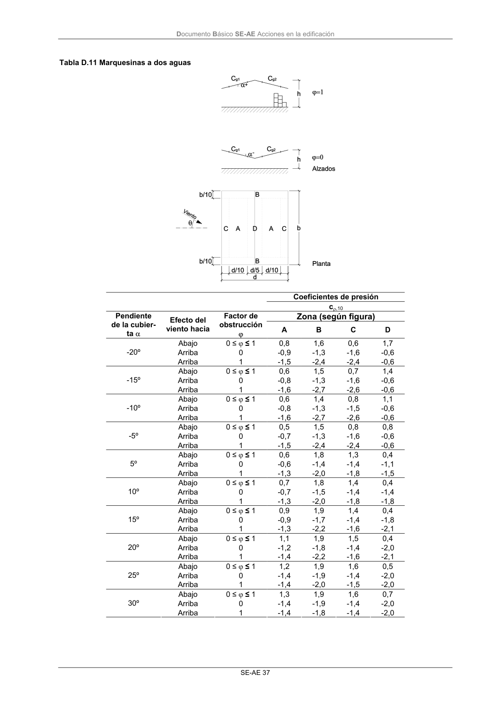

DB-SE-AE Acciones en la edificación · edición 2009-04 · capa oficial
Documento DB-SE-AE-oficial · SHA-256 del PDF 26116e5088955f0c6963a6187270cad282e1e7bf5a53a90f695c8fa50b4e4487
Página física 41 de 46.
Copia fiel del PDF fuente · Fuente oficial
Ficha de la disposición en la fuente oficial
Formato: Texto de la página (Markdown)
Documento Básico SE-AE Acciones en la edificación SE-AE 37 Tabla D.11 Marquesinas a dos aguas Coeficientes de presión cρ,10 Zona (según figura) Pendiente de la cubier- ta α Efecto del viento hacia Factor de obstrucción ϕ A B C D Abajo 0 ≤ ϕ ≤ 1 0,8 1,6 0,6 1,7 Arriba 0 -0,9 -1,3 -1,6 -0,6 -20º Arriba 1 -1,5 -2,4 -2,4 -0,6 Abajo 0 ≤ ϕ ≤ 1 0,6 1,5 0,7 1,4 Arriba 0 -0,8 -1,3 -1,6 -0,6 -15º Arriba 1 -1,6 -2,7 -2,6 -0,6 Abajo 0 ≤ ϕ ≤ 1 0,6 1,4 0,8 1,1 Arriba 0 -0,8 -1,3 -1,5 -0,6 -10º Arriba 1 -1,6 -2,7 -2,6 -0,6 Abajo 0 ≤ ϕ ≤ 1 0,5 1,5 0,8 0,8 Arriba 0 -0,7 -1,3 -1,6 -0,6 -5º Arriba 1 -1,5 -2,4 -2,4 -0,6 Abajo 0 ≤ ϕ ≤ 1 0,6 1,8 1,3 0,4 Arriba 0 -0,6 -1,4 -1,4 -1,1 5º Arriba 1 -1,3 -2,0 -1,8 -1,5 Abajo 0 ≤ ϕ ≤ 1 0,7 1,8 1,4 0,4 Arriba 0 -0,7 -1,5 -1,4 -1,4 10º Arriba 1 -1,3 -2,0 -1,8 -1,8 Abajo 0 ≤ ϕ ≤ 1 0,9 1,9 1,4 0,4 Arriba 0 -0,9 -1,7 -1,4 -1,8 15º Arriba 1 -1,3 -2,2 -1,6 -2,1 Abajo 0 ≤ ϕ ≤ 1 1,1 1,9 1,5 0,4 Arriba 0 -1,2 -1,8 -1,4 -2,0 20º Arriba 1 -1,4 -2,2 -1,6 -2,1 Abajo 0 ≤ ϕ ≤ 1 1,2 1,9 1,6 0,5 Arriba 0 -1,4 -1,9 -1,4 -2,0 25º Arriba 1 -1,4 -2,0 -1,5 -2,0 Abajo 0 ≤ ϕ ≤ 1 1,3 1,9 1,6 0,7 Arriba 0 -1,4 -1,9 -1,4 -2,0 30º Arriba 1 -1,4 -1,8 -1,4 -2,0
